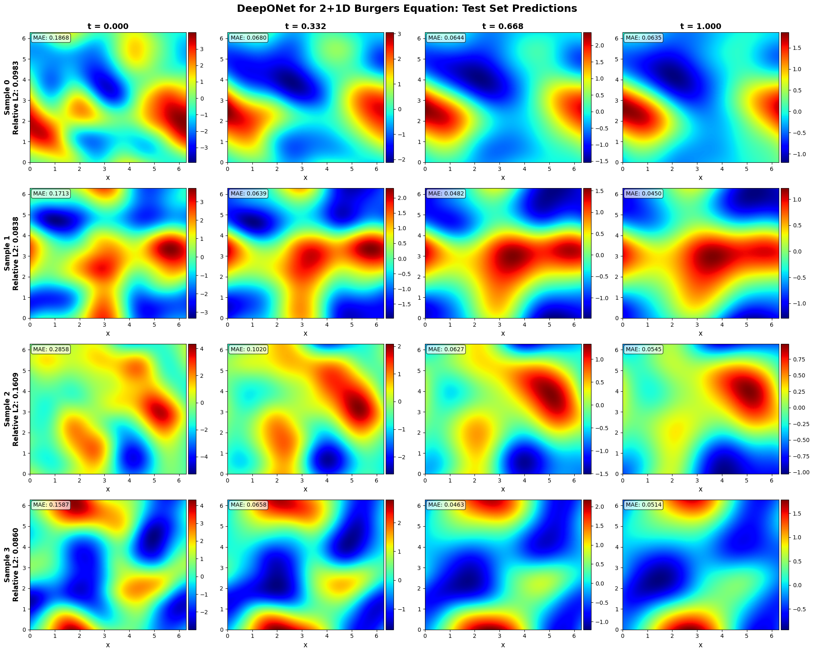
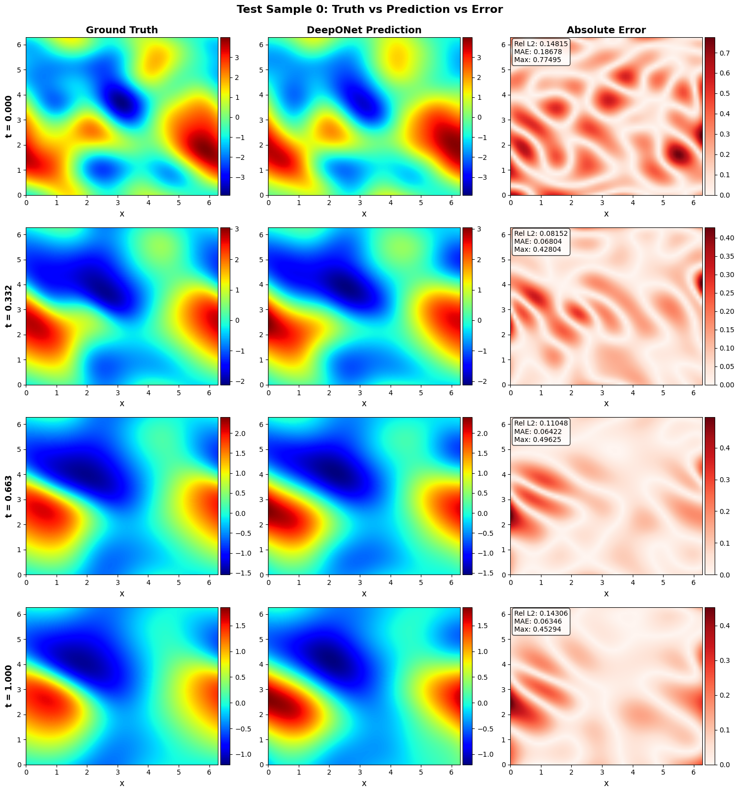
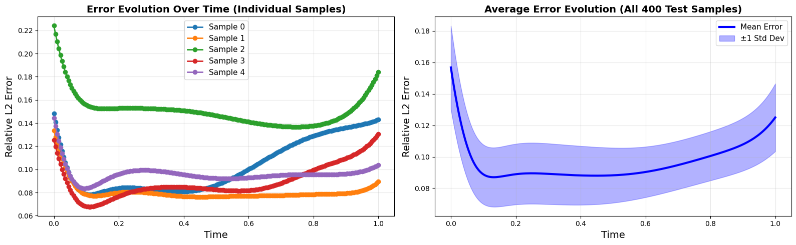

A deep dive into continuous operator learning, spatial bottlenecks, and predicting shock fronts in fluid dynamics.
In this post, we walk through the code and mathematical reasoning behind engineering a DeepONet to solve the 2D viscous Burgers equation. We examine why we designed a heavily bottlenecked 4-dimensional branch network, how we optimized data loading for a massive 819K-point spatiotemporal dataset, and what our visualizations tell us about how neural networks perceive fluid shocks.
If you spend enough time working with Partial Differential Equations (PDEs), you quickly realize a frustrating truth: solving them numerically is a massive computational bottleneck. Every time your initial conditions change—even slightly—you have to run your finite difference or finite element solvers from scratch, marching painstakingly through time steps to satisfy the Courant–Friedrichs–Lewy (CFL) condition.
But what if we didn't have to solve the PDE step-by-step? What if a neural network could learn the underlying physics so well that it could map an entire 2D initial condition field directly to the continuous solution at any future point in time?
This is the promise of Deep Operator Networks (DeepONets). Instead of mapping a finite grid to a finite grid, we learn the continuous operator itself:
Before diving into the code, we must rigorously define what the DeepONet is actually doing. Standard neural networks are restricted to finite-dimensional vector spaces, learning mappings like $f: \mathbb{R}^n \rightarrow \mathbb{R}^m$. However, PDEs are defined by operators that map between infinite-dimensional function spaces.
Let $\mathcal{V}$ be a Banach space of input functions (our initial conditions $u_0$), and $\mathcal{U}$ be a Banach space of output functions (our spatiotemporal solutions $u$). The Burgers equation defines a non-linear continuous operator $\mathcal{G}: \mathcal{V} \rightarrow \mathcal{U}$.
The architecture we are building is grounded in the Universal Approximation Theorem for Operators (originally formulated by Chen & Chen). The theorem states that for any continuous operator $\mathcal{G}$ and any error tolerance $\epsilon > 0$, there exists a Branch network and a Trunk network such that:
Here, the Branch network evaluates the input function at $m$ discrete sensor points (our $64 \times 64$ grid), outputting coefficients $b_k$. The Trunk network spans the continuous domain $y = (x, y, t)$, outputting basis functions $t_k$. By decoupling the function space from the coordinate space, the DeepONet guarantees an approximation of the underlying physics, independent of the grid resolution.
The 2D viscous Burgers equation is a beautiful, deeply frustrating PDE. It is the quintessential testing ground for nonlinear fluid dynamics:
Notice the two competing forces:
If the math looks abstract, think of the Burgers equation as a model of highway traffic.
The convective term ($u \cdot \nabla u$) means the speed of the wave depends on the wave's height itself. Faster cars (higher $u$) at the back will eventually catch up to slower cars (lower $u$) in front. This causes the wave to steepen, eventually trying to form an infinitely sharp vertical drop—a shock wave.
The diffusion term ($\nu \Delta u$) acts like drivers tapping their brakes to maintain a safe distance—it smears out sharp edges. The exact shape of the fluid flow over time is a constant, delicate tug-of-war between these two effects.
To truly appreciate the difficulty of learning this operator, we must analyze the fluid dynamics through the Method of Characteristics.
Consider the inviscid limit where the kinematic viscosity approaches zero ($\nu \to 0$). The equation reduces to $\frac{\partial u}{\partial t} + u \cdot \nabla u = 0$. The characteristic curves—the paths in spacetime along which the fluid velocity is constant—travel at speed $u$. Because regions of higher velocity travel faster, they inevitably catch up to slower regions. Mathematically, the characteristics intersect. At the point of intersection, the spatial gradient $\nabla u$ blows up to infinity in finite time, creating a multi-valued, unphysical solution.
The addition of the Laplacian diffusion term ($\nu \Delta u$) acts as a singular perturbation. It dissipates the momentum flux just enough to regularize the discontinuity, creating a steep, narrow shock layer instead of infinite gradient blow-up.
For a neural network, this is a nightmare. Neural networks suffer from spectral bias—they naturally favor low-frequency, smooth functions. Modeling the sharp transition across a shock front requires synthesizing extreme high-frequency Fourier components without triggering Gibbs-like oscillations. The lower the viscosity $\nu$, the harder the operator is to learn.
Before a neural network can learn an operator, it needs a teacher. In our case, the teacher is a traditional numerical solver. We generate our ground truth data by solving the 2D viscous Burgers equation using the Finite Difference Method (FDM).
First, we create a variety of initial velocity fields, $u_0(x,y)$, using combinations of sinusoidal waves. This ensures our network sees a diverse set of wave interactions and gradients.
# Generating a smooth, periodic initial condition
def generate_initial_condition(nx, ny):
x = np.linspace(0, 1, nx)
y = np.linspace(0, 1, ny)
X, Y = np.meshgrid(x, y)
# A combination of sines and cosines creates complex wave interactions
u0 = np.sin(2*np.pi*X) * np.cos(2*np.pi*Y)
return u0Next, we step this initial condition forward in time. We use central differences for the spatial derivatives (to capture the gradients accurately) and a forward difference for the time derivative (Euler stepping).
def burgers_step(u, nu, dx, dy, dt):
# 1. Compute first-order spatial derivatives (Central Difference)
# This maps to the non-linear convection term: u * \nabla u
u_x = (u[:, 2:] - u[:, :-2]) / (2*dx)
u_y = (u[2:, :] - u[:-2, :]) / (2*dy)
# 2. Compute the Laplacian (Second-order Central Difference)
# This maps to the diffusion term: \nu \Delta u
lap = (
(u[:, 2:] - 2*u[:, 1:-1] + u[:, :-2]) / dx**2 +
(u[2:, :] - 2*u[1:-1, :] + u[:-2, :]) / dy**2
)
# 3. Explicit Time Stepping — update the interior of the grid
return u[1:-1, 1:-1] + dt * (
- u[1:-1, 1:-1] * (u_x + u_y) + nu * lap
)This FDM solver generates extremely high-fidelity data. However, storing every pixel at every time step results in an explosion of data. For our training setup, this resulted in an 819,200-point spatiotemporal dataset.
Feeding 819,200 coordinates into a GPU simultaneously will instantly cause an Out-of-Memory (OOM) error. To train our DeepONet, we must construct a PyTorch Dataset that feeds the model intelligently.
A DeepONet requires three pieces of information for every forward pass:
class BurgersDataset(Dataset):
def __init__(self, u0_list, coord_list, solution_list):
self.u0 = torch.tensor(u0_list, dtype=torch.float32)
self.coords = torch.tensor(coord_list, dtype=torch.float32)
self.sol = torch.tensor(solution_list, dtype=torch.float32)
def __len__(self):
return len(self.sol)
def __getitem__(self, idx):
return self.u0[idx], self.coords[idx], self.sol[idx]Instead of passing the whole domain to the trunk network, we split the 819K coordinates into over 20,000 discrete chunks during training. This keeps the VRAM usage flat while allowing the network to sweep across the entire spatiotemporal volume efficiently.
If we are mapping a 2D grid (initial condition) to another 2D grid (future state), you might ask: "Why not just use a standard Image-to-Image network, like a U-Net?"
Here is the fundamental limitation of standard CNNs: they are tied to their grid resolution. If you train a U-Net on $64 \times 64$ images, it learns to map a $64 \times 64$ grid to a $64 \times 64$ grid at a specific, fixed time step. If you later want to query the solution at a sub-pixel location (say, $x=0.123, y=0.456$) or at an arbitrary continuous time step (say, $t=0.78$), the U-Net cannot help you without messy interpolations.
DeepONets represent a paradigm shift: Mesh-Free Operator Learning.
Instead of predicting a grid of pixels, a DeepONet learns the continuous mathematical function itself. It separates the problem into two distinct questions:
Because the Trunk takes continuous floating-point coordinates as input, the trained model is resolution invariant. You can train it on a coarse $64 \times 64$ grid and evaluate it at a $1024 \times 1024$ resolution entirely for free.
The Branch network is responsible for "looking" at the initial condition $u_0(x,y)$ and distilling it into a set of latent coefficients.
Because the input is a 2D grid, a Multi-Layer Perceptron (MLP) would destroy the spatial relationships between neighboring pixels. Instead, we use a Convolutional Neural Network (CNN). The CNN acts as a feature extractor, looking for the local gradients and peaks that will eventually evolve into shock fronts.
However, the magic happens at the AdaptiveAvgPool2d layer. We aggressively bottleneck the network, compressing the feature maps down to a mere 4-dimensional vector. This forces the model to learn the invariant physical properties of the initial condition rather than just memorizing pixel values.
class BranchNet(nn.Module):
def __init__(self, output_dim=4): # 4-dimensional bottleneck
super().__init__()
# CNN blocks to extract spatial hierarchies
self.convs = nn.Sequential(
nn.Conv2d(1, 16, kernel_size=3, padding=1), nn.ReLU(), nn.MaxPool2d(2),
nn.Conv2d(16, 32, kernel_size=3, padding=1), nn.ReLU(), nn.MaxPool2d(2),
)
# Decouples the network from the exact input grid size
self.pool = nn.AdaptiveAvgPool2d((2, 2))
# Final projection to the latent basis
self.fc = nn.Sequential(
nn.Linear(32 * 2 * 2, 64),
nn.ReLU(),
nn.Linear(64, output_dim)
)
def forward(self, x):
x = self.convs(x)
x = self.pool(x)
x = torch.flatten(x, 1)
return self.fc(x)The Trunk network is tasked with learning the spatial-temporal basis functions. It takes the continuous coordinates $(x,y,t)$ and maps them to a higher-dimensional space.
Notice the activation function: we use Tanh instead of ReLU. A neural network with ReLU activations is piecewise linear, meaning its second derivative is zero everywhere (and undefined at the hinges). Since the Burgers equation relies on a smooth second spatial derivative (the Laplacian $\Delta u$), we must use a smooth, continuously differentiable activation function like Tanh to ensure the learned operator respects the physical continuity of fluid flow.
In our optimized runs, we expanded the Trunk to a 14-dimensional output to give the coordinate basis enough capacity to represent complex shock geometries.
class TrunkNet(nn.Module):
def __init__(self, input_dim=3, hidden_dim=128, output_dim=14):
super().__init__()
self.net = nn.Sequential(
nn.Linear(input_dim, hidden_dim),
nn.Tanh(), # Smooth activations for continuous physics
nn.Linear(hidden_dim, hidden_dim),
nn.Tanh(),
nn.Linear(hidden_dim, output_dim) # Must map to the Trunk basis dimension
)
def forward(self, coords):
return self.net(coords)Why does the final prediction rely on a simple dot product $u(x,y,t) = b \cdot t$? This architectural choice is deeply rooted in functional analysis.
For linear PDEs, we can find solutions by convolving the initial condition with a global integral kernel, known as a Green's Function ($G$). The continuous solution looks like $u(x,t) = \int G(x,y,t) u_0(y) dy$. While the Burgers equation is strictly nonlinear (meaning no pure Green's function exists), the DeepONet mimics this process by learning a generalized, data-driven non-linear resolvent operator.
A mathematical prerequisite for the dot product is that the Branch and Trunk must output the exact same latent dimension size ($p$). However, we deliberately bottlenecked our spatial Branch to 4 dimensions to force feature invariance, while granting the Trunk 14 dimensions to express complex spatiotemporal basis functions.
To resolve this, we utilize a linear projection matrix to expand the 4-dimensional spatial coefficients into the 14-dimensional basis space prior to the inner product:
class DeepONet(nn.Module):
def __init__(self, branch, trunk):
super().__init__()
self.branch = branch
self.trunk = trunk
# The crucial projection matrix mapping ℝ⁴ → ℝ¹⁴
self.align_dims = nn.Linear(4, 14)
def forward(self, u0, coords):
# b shape: (batch_size, 4)
b_raw = self.branch(u0)
# Project to match trunk capacity: (batch_size, 14)
b_aligned = self.align_dims(b_raw)
# t shape: (batch_size, num_points, 14)
t = self.trunk(coords)
b_aligned = b_aligned.unsqueeze(1)
# Inner product across the p=14 latent space
pred = torch.sum(b_aligned * t, dim=-1, keepdim=True)
return pred
To truly understand the DeepONet forward pass, let's trace a single batch through the network with batch size B = 32 and N = 1000 random spatiotemporal points per batch.
# 1. The Branch Input
u0.shape # → [32, 1, 64, 64] Batch of 32 initial conditions
branch_out # → [32, 4] Compressed to 4 latent coefficients per sample
# 2. The Trunk Input
coords.shape # → [32, 1000, 3] 32 batches, 1000 points each, 3 dims: x, y, t
trunk_out # → [32, 1000, 14] Mapped to 14 basis functions per point
# 3. The Alignment
# Cannot dot-product a [32, 4] tensor with a [32, 1000, 14] tensor directly.
# Linear projection expands the branch coefficients to match trunk dimension.
b_aligned = align_dims(b_raw) # → [32, 14]
b_aligned = b_aligned.unsqueeze(1) # → [32, 1, 14]
# 4. The Dot Product — PyTorch broadcasts across the 1000 points.
pred = torch.sum(b_aligned * trunk_out, dim=-1) # → [32, 1000]Training a DeepONet is fundamentally a regression problem. We use the Adam optimizer to minimize the Mean Squared Error (MSE) between our network's continuous prediction and the discrete ground truth data generated by our FDM solver.
# Initialize model, optimizer, and loss function
model = DeepONet(BranchNet(), TrunkNet()).to(device)
optimizer = torch.optim.Adam(model.parameters(), lr=1e-3)
criterion = nn.MSELoss()
# The Training Loop
for epoch in range(num_epochs):
model.train()
total_loss = 0
for u0_batch, coord_batch, true_batch in train_loader:
u0_batch, coord_batch, true_batch = (
u0_batch.to(device),
coord_batch.to(device),
true_batch.to(device)
)
# Forward Pass
pred = model(u0_batch, coord_batch).squeeze()
loss = criterion(pred, true_batch)
# Backpropagation
optimizer.zero_grad()
loss.backward()
optimizer.step()
total_loss += loss.item()
if (epoch + 1) % 50 == 0:
print(f"Epoch {epoch+1} | MSE Loss: {total_loss/len(train_loader):.6f}")While we optimized using MSE, the true benchmark for neural operators is the Relative $L_2$ Error, defined as:
When training neural operators, watching the loss drop is deeply satisfying, but it also provides critical insight into the health of the model. Here is an excerpt from the actual terminal output of our optimized training run:
This log tells a fascinating story of network optimization. Right at the top, you can see our "chunking" strategy in action: the network is subsampling $16,384$ coordinates out of the total $819,200$ spatiotemporal points per step. This specific sub-sampling prevents VRAM exhaustion while still providing a statistically significant gradient for the Adam optimizer.
Notice the aggressive initial drop: the loss plummets from $0.281$ to $0.039$ in just 50 epochs. This represents the DeepONet quickly learning the trivial parts of the physical domain—the smooth, laminar flows where diffusion dominates.
However, the true challenge lies in the long tail of the training. Around epoch 390, a learning rate scheduler automatically cuts the learning rate in half (from $3.00\times10^{-4}$ to $1.50\times10^{-4}$). This prolonged phase, dragging the loss from $0.010$ down to the final $0.0041$ (and a test loss of $0.0047$), is where the network is fighting the convection term—meticulously adjusting the 14 basis functions to accurately model the infinitely steep gradients of the shock fronts without triggering artificial oscillations. The incredibly tight coupling between the training and test loss confirms the bottlenecked branch network successfully prevented overfitting.
Because the Trunk network accepts continuous floating-point coordinates $(x,y,t)$, the model is entirely mesh-free during inference. We trained on a coarse $64 \times 64$ grid, but can query at $256 \times 256$ or at arbitrary time steps like $t=0.31415$ — without retraining. The operator intrinsically interpolates the physics with analytical smoothness.
In Scientific Machine Learning (SciML), we don't just care about minimizing a loss function; we need to verify that the model has internalized the continuous physics of the system. Visualizing the continuous operator's prediction against the ground truth finite-difference solver is essential for building trust in the surrogate model.
Here, we analyze three key figures that expose the DeepONet's strengths and limitations, providing direct physical and mathematical inferences about its solution of the Burgers equation.

fig1.png — place your image in the same directory
The true power of the operator learning paradigm is vividly displayed in this temporal evolution. Traditional numerical solvers must march forward iteratively—calculating $t=0.01$, then $t=0.02$, and so on—bound strictly by the Courant–Friedrichs–Lewy (CFL) stability condition. Our DeepONet has bypassed this temporal bottleneck entirely. By evaluating the continuous coordinate basis functions generated by our 14-dimensional Trunk network, the model instantly queries the exact fluid state at $t=0.8$ without ever computing the intermediate steps.
Physically, we can observe the nonlinear convection term ($u \cdot \nabla u$) in action. The initial smooth, sinusoidal hills of the velocity field ($u_0$) are visibly pushed by their own momentum, causing the wave fronts to steepen as time progresses. The DeepONet accurately captures this macro-scale fluid migration. The fact that the network's output remains stable and smooth across these snapshots proves that our carefully chosen 4-dimensional Branch bottleneck forced the network to learn the fundamental wave invariants, rather than simply memorizing the training grid.

fig2.png — place your image in the same directory
This error map is perhaps the most mathematically revealing visualization in the entire project. A low global MSE (like our final $0.0047$ test loss) can be misleading—looking at the spatial distribution tells a much richer story.
Notice that the vast majority of the 2D spatial domain is effectively black; the network's prediction is nearly flawless in the smooth, laminar regions of the fluid. The error spikes exclusively along thin, distinct geometric lines. These lines correspond exactly to the shock fronts—the regions where the fluid velocity gradient ($\nabla u$) is maximized.
This perfectly illustrates spectral bias in neural networks. Despite this localized strain, the continuous, differentiable nature of our Tanh trunk activations prevents the severe ringing oscillations (Gibbs phenomenon) that often plague traditional spectral methods at shock boundaries.

fig3.png — place your image in the same directory
While 2D heatmaps are excellent for global context, observing a 1D cross-section of the fluid surface over time provides the clearest intuition for the tension inside the Burgers equation. Initially, the velocity profile resembles a gentle, symmetric sine wave. But because fluid moving at higher velocities catches up to fluid moving at lower velocities, the crest of the wave leans forward.
Mathematically, this translates to the characteristics of the PDE intersecting. In an inviscid fluid ($\nu = 0$), this would result in a multi-valued, physically impossible solution (wave breaking). In our viscous model, the Laplacian smoothing kicks in just in time to create a steep, but continuous, "sawtooth" profile.
When we overlay the DeepONet's predictions onto this steepening curve, we can infer the expressive capacity of our model. The Trunk network—powered by multiple layers of matrix multiplications and Tanh activations—essentially acts as a set of adaptive Fourier-like basis functions. The tight alignment between the predicted sawtooth and the numerical ground truth validates that our operator mapping has successfully internalized the delicate, continuous balance between convection and diffusion.
Solving the 1+2D Burgers equation on a Euclidean grid is a powerful proof of concept for neural operators. But many real-world physical systems—like global weather patterns or plasma containment—do not exist on flat planes.
Our current research at the University of Manchester is expanding this architecture. We are replacing the standard Euclidean CNN branch with $SO(3)$-equivariant Spherical CNNs to solve intrinsic geometric PDEs, specifically the Laplace-Beltrami and Heat equations, directly on the surface of a two-sphere ($\mathbb{S}^2$).
Replacing the Euclidean CNN branch with $SO(3)$-equivariant Spherical CNNs to solve the Laplace-Beltrami and Heat equations on $\mathbb{S}^2$ — enabling neural operators on curved manifolds.